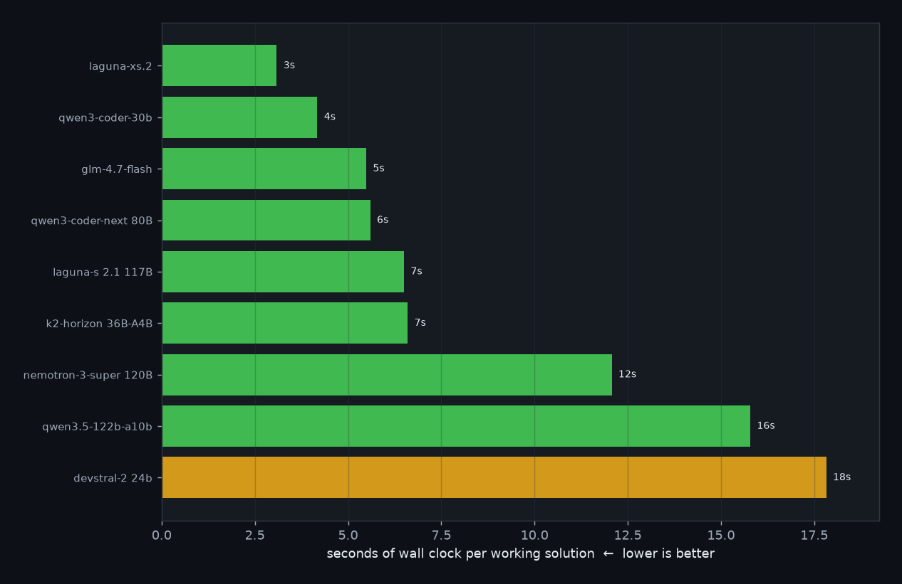
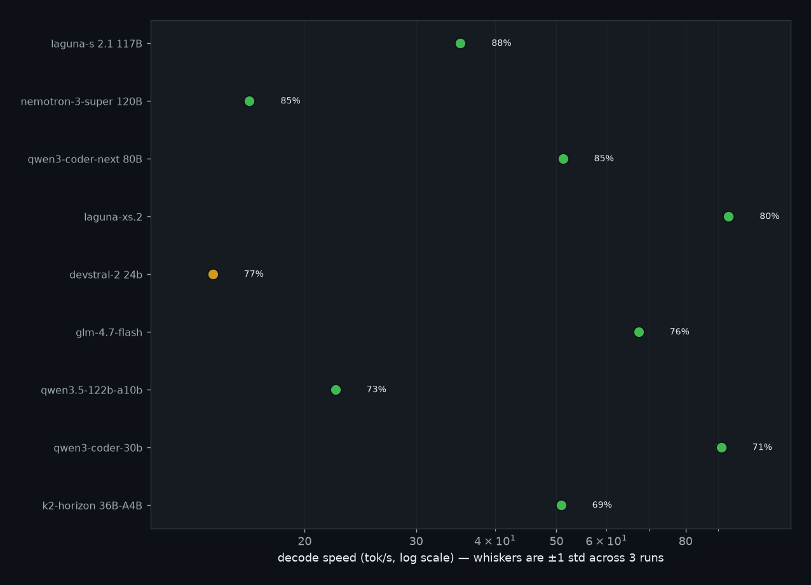
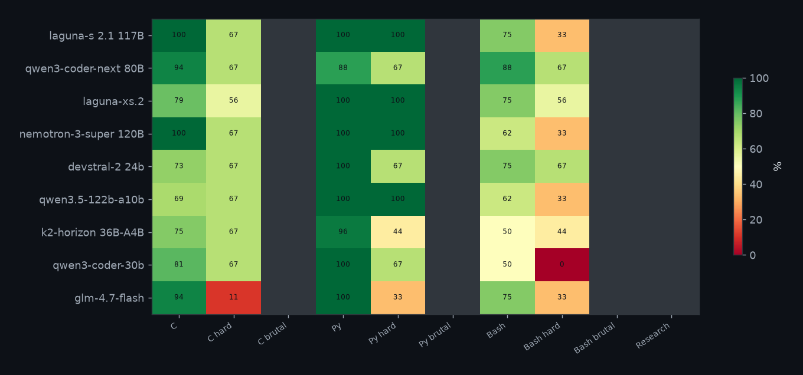

C, Python and Bash — easy + hard (research and brutal left out). 3 trials per task, all at temperature 0. The bar is total wall time, failures included, divided by how many trials passed. Lower is better — a wrong answer still costs its generation time.

Each row is a model's coding pass rate (the 126-task suite) against decode tok/s. Speed is a 1500-word essay about MIT — content is not graded. Median of 3 generations; whiskers are ±1 std. Upper-right wins.

The same hidden tests as the tables: C compiled with cc -std=gnu11, Python against asserts, Bash exact stdout. 3 trials per task, all at temperature 0. Brutal is shown here but not folded into the 126-task headline.
